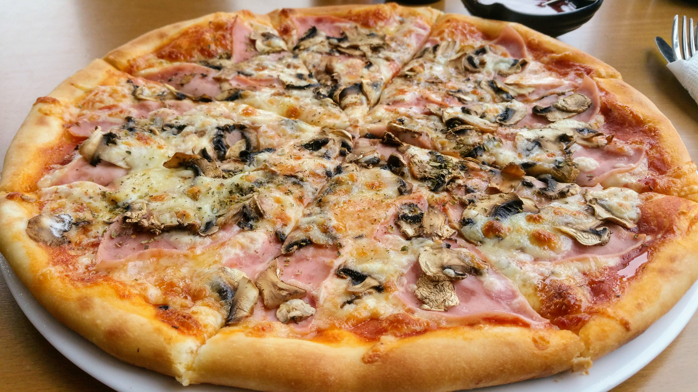

Home
Pizza Capricciosa

Pizza Capricciosa is a style of pizza in Italian cuisine prepared with mozzarella cheese, ham, mushrooms (usually champignons), black olives, artichokes, and tomato sauce.
Ingredients
- Mozzarella cheese
- Ham
- Pizza Sauce
- Olives
- Mushrooms
- Artichokes
Preparation Method
- Pre-heat the oven to 250°C.
- Make your pizza dough of choice then stretch it out into a 30cm.
- Slide the rolled base onto the pan (or baking tray) to assemble the pizza on it.
- Mix the pizza sauce ingredients in a small bowl.
- Sprinkle with cheese first, then scatter/drape/place the toppings all across the surface.
- Bake for 10 to 12 minutes or until the crust is crispy and there are light brown spots on the melted cheese